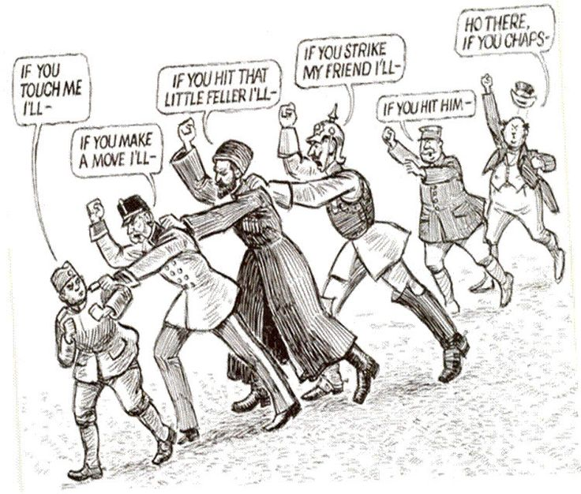
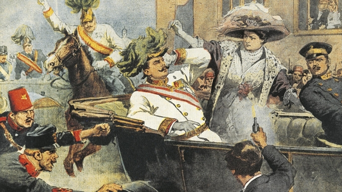
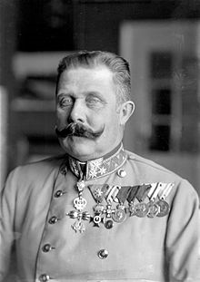

IF YOU CAN SEE THIS TEXT, YOU NEED TO ENABLE JAVASCRIPT FOR MANY FUNCTIONS OF THIS SITE
   There are not many events in history that a singular nobody would change the world in one day. On June 28th 1914 Gavrilo Princip killed two people, and what he did would cause the ignition of World War I. The Balkans were unstable at the dawn of World War I, and the recently acquired Bosnia there were still people in Bosnia who wanted to be part of Serbia instead of Austria-Hungary. These nationalist would plan to assassinate the visiting Archduke on June 28th. The itinerary for his visit in Sarajevo was published to those who wanted see the visit. The Archduke’s vehicle was an open car, and on the parade the first assassination attempt failed, where a grenade was thrown but did not detonate. The failed assassin took a cyanide pill and jumped into the river, but the pill failed and the river was shallow.
But coincidentally the Archduke’s car would take a wrong turn and went into reverse. the building next door was where Gavrilo Princep was loitering and he took the opportunity to finish what he and the other nationalists couldn’t do. Princep killed Ferdinand and his wife. This event would cause Austria-Hungary to declare war on Serbia shortly after, and then cause the chain reaction of war declarations from other European powers causing World War I.